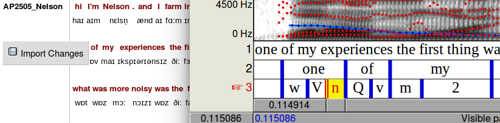

4 - Alignment
HTK
The Hidden Markov Model Toolkit (HTK) is a speech recognition toolkit developed at Cambridge University. It is a set of programs that can be used to build speech recognition systems. Part of the process of building such systems involves force-aligning training data - i.e. automatically lining up phonemic-transcriptions of known words with the audio signal in the training recordings. LaBB-CAT takes advantage of this capability to facilitate forced-alignment for your transcripts.
In order to do this, HTK needs the following ingredients:
- a set of recordings broken up into short utterances
- orthographic transcriptions of each utterance
- phonemic transcriptions of each of the words in each utterance
In the demo database you have all of these three ingredients, and the data has be force-aligned using HTK.
This means that, in addition to the manually alignment of utterance start/end times, HTK has automatically provided start and end times for words, and also for the speech sounds (‘phones’) within each word.
- Select the transcripts option on the menu, and open a transcript in the list.
- Tick the segment layer; this is the layer that contains the phone that HTK has aligned.
The segment layer looks similar to the phonemes layer on the transcript page, but there are several important differences:
- Each of the phonemes layer annotations has the transcription for the whole word, e.g.
- /dɪfrənt/
…but the segment layer has, for each word, several annotations, one for each phone. - /d/
- /ɪ/
- /f/
- /r/
- /ə/
- /n/
- /t/
- /dɪfrənt/
- The phonemes layer annotation are word tags that are not aligned, but the segment layer annotations have a start and end time specified.
- The phonemes layer can include more than one phonemic transcription for a word - all possible pronunciations found in CELEX are tagged on each token, e.g.
- /dɪfrənt/
- /dɪfrn̩t/
- /dɪfərənt/
- /dɪfərn̩t/
…but the segment layer annotations represent only one pronunciation; the pronunciation that HTK determined to be the one that best matched the audio.
- /dɪfrənt/
The interactive transcript page doesn’t show you the alignments of the words or phones, but you can see those using the "EMU webApp" that is integrated into LaBB-CAT.
(For more information about EMU, see: http://ips-lmu.github.io/EMU.html)
- Click on a line that has been aligned (i.e. that has segments under the words).
- Select the ‘View in EMU webApp’ option on the menu.
A new window will appear, and after a short delay, you will see the wave form of the utterance audio, with a spectrogram, and below this, segment annotations which are aligned with the audio above and represent individual sounds within each word. - You can check the alignments by clicking on a segment to selected it, and then clicking the Play Selected button below.
Praat Browser Integration
LaBB-CAT also integrates directly with Praat, if you have it installed on your computer. With Praat integration installed, you can similarly inspect alignments, but you can also correct them by moving the alignments in Praat and then saving them back to LaBB-CAT.
If you don’t use Praat, or don’t have it installed on your computer, you can skip this section.
Although you can’t actually correct the Demo LaBB-CAT alignments, because you have read-only access to the data, you may like to install the Praat integration to get an idea of how it works:
First, the LaBB-CAT/Praat integration has to be set up; this only has to be done once:
- On the top-right of the transcript page, above the playback controls, there’s a Praat icon
 - click it.
- click it. - Follow the instructions that appear (these vary depending on what web browser you use).
You may need to grant a browser extension permission to install, and it’s possible you will need a connection to the internet in order to download this extension.
Now Praat integration has been set up, and you should be able to access Praat options in the transcript page from now on… - Click on a line that has been aligned, and select the ‘Open Text Grid in Praat’ option on the menu.
You may also be prompted to download and run a program called “install-jsendpraat.jar”. If so, click the link, save the resulting file, run the program, and then do this step again.
You also may be asked where Praat is installed; Navigate to the location where Praat is installed, and double-click the “Praat.exe” file (on some systems the file may simply be called “Praat”). The Praat program may open, and then immediately close, as LaBB-CAT tests it can communicate with Praat.
If in doubt, check the online help on the transcript page; it has a section explaining how to set up Praat integration on various browsers and operating systems.
online help on the transcript page; it has a section explaining how to set up Praat integration on various browsers and operating systems.
After a short delay, Praat should open, and show you a spectrogram of the line’s audio, with a TextGrid below that includes the words and the segments. - If you click on a word, and hit the <tab> key, the word’s interval is played. Try out various words, and see what you think about how accurate HTK has been with its alignment.
Try this out with different lines in the transcript.
You will see that in some cases the alignment is pretty good, and in other cases, it’s not so good. In the not-so-good cases, see if you can figure out why HTK got it wrong.
If you had ‘edit’ rather than ‘read-only’ permissions in LaBB-CAT, then each time you opened an utterance in Praat, a button would appear in the transcript to the left of the line, labelled Import Changes. This button would allow you to save any adjustments you might want to make to the alignments back into the LaBB-CAT database.

These changes are flagged as manual edits, so if forced-alignment is run again, they will not be over-written with new bad alignments.
This mechanism can also be used to add other annotations from Praat into LaBB-CAT annotation layers.
Annotating Aligned Data
Once the words and phone have been aligned with HTK there are a number of annotation possibilities that arise.
For example, word syllabification information can be retrieved from CELEX and combined with the aligned phones to construct aligned syllable annotations.
- Tick the alignment project at the top of the transcript.
This reveals several layers. - Tick the syllables layer
- Once the transcript has re-loaded, open an utterance with the EMU webApp or with Praat.
You will see that, in addition to aligned words and phones, the syllables are also aligned, and labelled with their phonemic transcription, and stressed syllables are prepended with an apostrophe.
Also, with exact word durations (i.e. excluding pauses in speech) and syllable counts, the speaker’s articulation rate, in syllables per minute, can be computed. The Statistics Layer Manager is a module that can be configured to compute sums, counts, and rates of various kinds over different scopes, including syllables per minute.
- Tick the syllables per minute layer.
You will see that each utterance has a spanning annotation across the top of it, labelled with a number; that number is the articulation rate for that particular utterance.
Both local and global articulation rate can be calculated … - Click on the name of the speaker at the top of the transcript.
This will open the participant attributes page for that speaker.
You will see that one of the attributes is Syllables per Minute; this is the speakers overall articulation rate, across all their utterances.
Articulation rate is calculated by excluding the durations of inter-word pauses. These pauses themselves can be annotated, for search or analysis purposes.
- Go back to the transcript page.
- Tick the previous pause layer.
You will see that many of the word tokens in the transcript are tagged with a number. These words are preceded by a pause in speech, and the number is the length of that pause in seconds. - Open an utterance in the EMU webApp or in Praat to confirm these pauses are correct.
You may notice that pauses in the middle of utterances are always right, but the pause before the first word in the utterance seems wrong. See if you can figure out why.
Searching
Given that HTK has created individually aligned phones in the database, those speech sounds can be searched and exported.
Let’s say you’re particularly interested in the vowel in the word ‘KIT’. You can now identify and extract instances of that phoneme.
- Click the search link on the menu.
- Tick the segment layer.
The segments layer contains annotations at the sub-word level - i.e. there are potentially multiple annotations per word, each annotation representing a single phone of the word. You will see that, as with other layers, there is a box on the segments layer for a regular expression.
As with other patterns in the search matrix, the pattern that you enter in the box is matched against individual annotations. So if you enter I (i.e. capital I) in the in the box, it will match each ‘KIT’ vowel segment in each word in the database.
If you enter a pattern that would match more than a single character on this layer (i.e. more than a single phoneme) then no search results will be returned, because each annotation on this layer is only a single character long (remember the DISC encoding uses one character per phoneme).
For example, if you enter .*IN for your search, intending to match all words ending in “…ing”, then no results will be returned, because no single segment will ever match that pattern.
- We want to search for all instances of the ‘KIT’ vowel, so enter
Iin the segments pattern box. - Click Search
After a short delay, you should see a list of results.
You will see that the results list words that have the ‘KIT’, but in many cases it’s not the main stressed vowel. What if we’re only interested in stressed ‘KIT’ vowels?
That’s ok, because we also have stress-marked syllable annotations, so we can add that layer to the search matrix, and identify only stressed vowels …
- Note down the number of results returned by your last search.
- Back on the search form, add the syllables layer to the search matrix.
- As we have seen, stressed syllables are labelled with an apostrophe at the start. Enter a regular expression that will identify all syllables that start with apostrophe.
In this way, the results will give use all KIT vowels that are within a stressed syllable. - Click Search again.
This time you will see fewer results returned, because we’ve filtered out the un-stressed version of the vowel.
You can export all these vowel tokens to a CSV file for analysis or further processing. The CSV file can include all kinds of other information, including participant and transcript attributes and other annotations.
- On the results page, next to the CSV Export button there’s a ▼ button. Press it.
You will see several columns of checkboxes appear. - Tick the following checkboxes:
- Under Participant tick gender, age_category, and syllables per minute
- Under Span tick topic
- Under Phrase tick syllables per minute
- Now press the CSV Export button above.
- Save and open the resulting file.
You will see that the file includes extra columns for the attributes and layers that you ticked (e.g. the topic marked in the original ELAN transcript, the speaker’s articulation rate, the local articulation rate, etc.).
The CSV file includes whatever annotation you might be interested, so you can go on to do qualitative or statistical analysis with other tools like Microsoft Excel or R. You can even add your own annotations to the CSV file and import them back into LaBB-CAT.
Acoustic Measurement
The CSV file also includes the columns “Target segments start” and “Target segments end”; these columns have the start and end time of the matching ‘KIT’ vowel token. Given this information, LaBB-CAT can extract acoustic measurements on the speech sounds using Praat.
The following steps work even if you don’t have Praat installed on your own computer, because Praat is used on the LaBB-CAT server …
- In LaBB-CAT, click the upload menu option.
- Click the process with praat option.
- Click Browse and select the CSV results that you saved above.
You will see a form to fill in, and the first couple of settings (Transcript Name column and Participant column should be already filled in). - For the Start Time column, ensure that the Target segment start option is selected.
- For the End Time column, ensure the Target segment end option is selected.
These two settings define the start/end times of the phone. For some measurements you might extract from Praat, processing signal that includes surrounding context is usually a good idea. You’ll see there’s a setting for that (which you can leave at the default of 0.025s), and you will see options for various measurements.
The default options are for F1 and F2 only, but if you feel like getting other measurements, feel free to tick those options too. You can expand each section with the ⯈ button to reveal more settings, which allow you to specify more detail about how Praat should do its computations. Again, feel free to look at those and try different settings.
- Click Process.
You will see a progress bar while LaBB-CAT generates Praat scripts and runs them. - Once Praat has finished processing the intervals, you will get a CSV file (you might have to click the CSV file with measurements link) - save and open it.
You will see that it’s a copy of the CSV file you uploaded, with some extra columns added on the right.
Depending on your settings, this will include at least one column per measurement you selected (the formant columns also include on that contains the time at which the measurements were taken), and a final column called Error which is hopefully blank, but which might contain errors reported back by Praat (e.g. if it couldn’t find the audio file or ran into any other problem during processing).
In this worksheet you have seen that:
- HTK can be used to compute word and phone alignments automatically from your data.
- The resulting alignments can be inspected and corrected directly from the transcript page.
- Articulation rate can be computed, excluding inter-word pauses.
- Inter-word pauses can also be tagged.
- Individual phone tokens can be searched for and extracted.
- Acoustic measurements for matching phones can also be made.